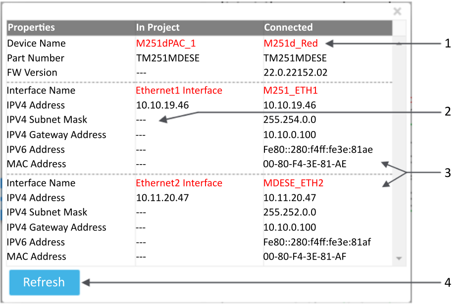
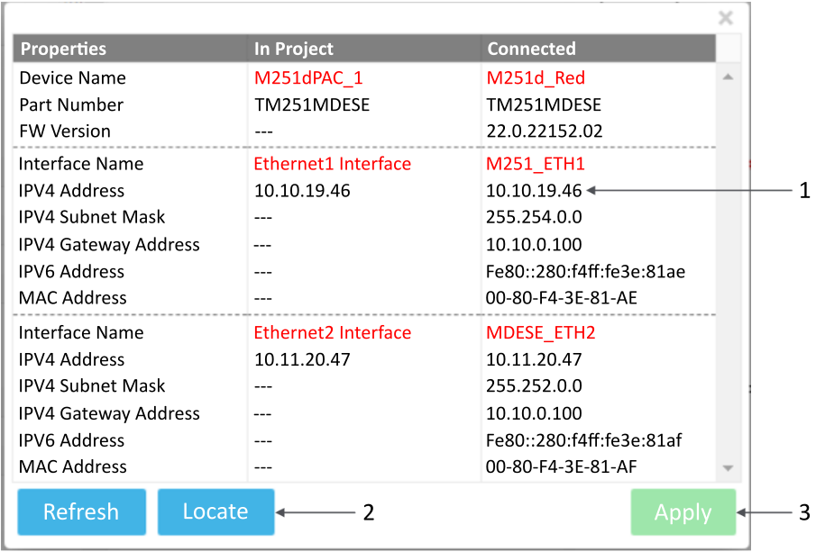

To set the previously configured devices accordingly to the discovered devices, perform the following actions:
Detecting Differences Between Discovered and Configured Devices.
Assigning the Correct device settings to a Discovered Device.
After a device is discovered, its information is transmitted to the solution. Parameters are used to identify similarities and differences between a discovered device and a configured device in the Physical view.
The following parameters are used to compare the discovered device and the configured ones:
Device type, represented by its aspect in the workspace.
Part Number of the device.
IP Address displayed using the icon.
Name displayed using the icon.
Detecting device parameter differences is performed in the following sequence:
IP Addresses:
If no IP Address of a discovered device matches the IP Address of a configured device, the IP Address of the discovered device is displayed in red and the comparison ends.
If the IP Address of a discovered device matches the IP Address of a configured device, the IP Address is displayed in green in the Discovery view and the comparison proceeds to the second step.
Device type and Part Number:
If the device type and the Part Number of matching devices are not the same, the device in the Physical view is assigned the Device different status.
If the device type and the Part Number of the matching devices are the same, the configured device in the Physical view conforms to the discovered device and the commissioning is complete.
Name:
If the Name of matching devices are the same, the Name of the discovered device is displayed in green.
If the Name of matching devices are not the same, then the Name of the discovered device is displayed in red.
If the comparison stops because the IP Addresses do not match, the Name of the discovered device is displayed in black.
To get a detailed comparison of discovered and configured device parameters, use the Get identity command.
Discovery view on any discovered device.
Physical Devices view if Monitoring is started and if a configured device has an IP address that matches the IP address of a discovered device. When invoking the command, user credentials are requested.
To display identification information:
Right-click a device and select Get Identity.
Two sets of information are displayed:
Parameters corresponding to the configured device (In Project column).
Parameters corresponding to discovered device (Connected column).
The information shown using the Get Identity command depends on where the command is invoked. If invoked from the:
Physical view, the left column corresponds to the device selected in the Physical view and the right column corresponds to the discovered device with the same IP address.
Discovery view, the right column corresponds to the device selected and the left column corresponds to the matching configured device. If the discovered device does not match a configured device, the In Project column remains empty (- - -).

Legend:
Text in red indicates differences between the configured device (In Project) and the discovered device (Connected).
A series of dashes (- - -) indicates that no information exists for this field.
The network interfaces. Devices like M251d or M262d have two interfaces, so two sets of parameters are displayed, one for each interface.
The Refresh button shows the latest information about the discovered and configured devices.
Use this information to confirm that the device in your project is properly configured. If not, because the information cannot be modified using the Get Identity command, refer to the following section (Assigning the Correct device settings to a Connected Device).
Now that all the devices parameter differences have been identified using the Get Identity command, follow these actions to make the parameters match:
Select the configured device and modify manually the parameters in its Properties tab, as detailed in the topic Managing Networks and Device IP Addresses.
Use the Configure device settings command to modify discovered device parameters.
The Configure device settings command can be invoked from the:
Physical view: The IP address, the device type, and the Part Number should match to enable this command.
Discovery view: This command can be invoked at any time.
In both cases, credentials are requested to invoke this command. Valid user name and password are determined as follows:
If this is a device with a pre-existing configuration, enter the user name and password previously created in the User Management dialog.
If this is the first configuration of a new device (out-of-the-box), or of a device with its configuration reset to the factory default settings, enter the default user name and password provided by the device manufacturer. After deployment of the device configuration, which includes the collection of valid users for the solution, use only the user name and password created in the User Management dialog.
You can now edit the parameters of the discovered device to match its IPv4 Addresses. Click Apply to save the modification.
The Configure device settings command opens the following dialog:

Legend:
Information about the discovered device that can be edited: IPV4 Address, IPV4 Subnet Mask and IPV4 Gateway Address.
The Locate button is used to activate a signal on the discovered device, as described in the topic Locating a Discovered Device.
Click Apply to set the modification made on the discovered device parameters.
At this point, the devices are all set up according to the discovered devices.